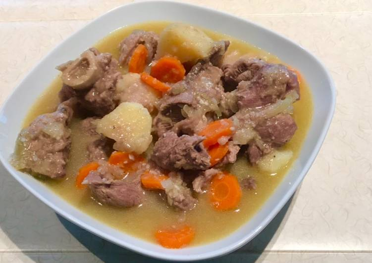

Required Ingredients For Meat Soup
Serving: 6 Persons.
Prepare 1/2 kg lamb meat
You need 1 slice onion 🧅
Take 1 slice carrot 🥕
Take 2 slice cube potatoes
Prepare 1 tablespoon ginger &garlic paste each
Provide Salt
Prepare Water
You need 1/2 teaspon blackpeper
Use 1 lime
Instructions :
- Wash all the ingredients:-meat and the vegetables. Cut them into medium size pieces and place in a medium large pot.
- Add ginger garlic paste,salt, blackpeper,onions, lime juice,potatoes & vegetables and some water and the carrots later on.
- Let the soup to boil on a medium heat till everything is nicely cooked and soft.
- Once everything is soft, then your meat soup is ready and serve in a bowl,serve with some bread 🍞, maandazi or chapati and enjoy 😉 xxx.
Return to main page